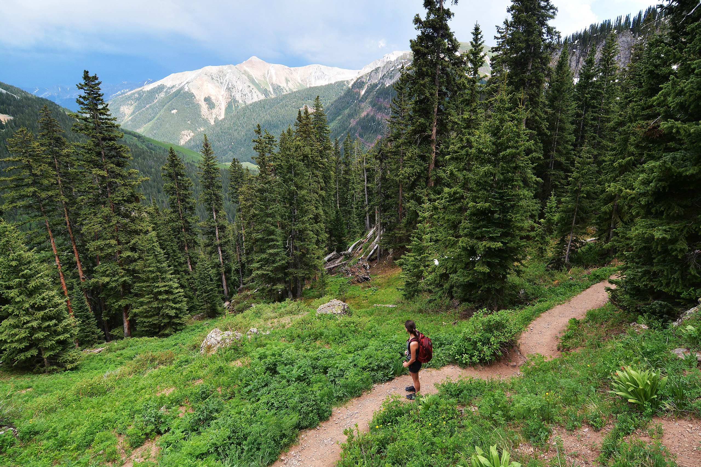
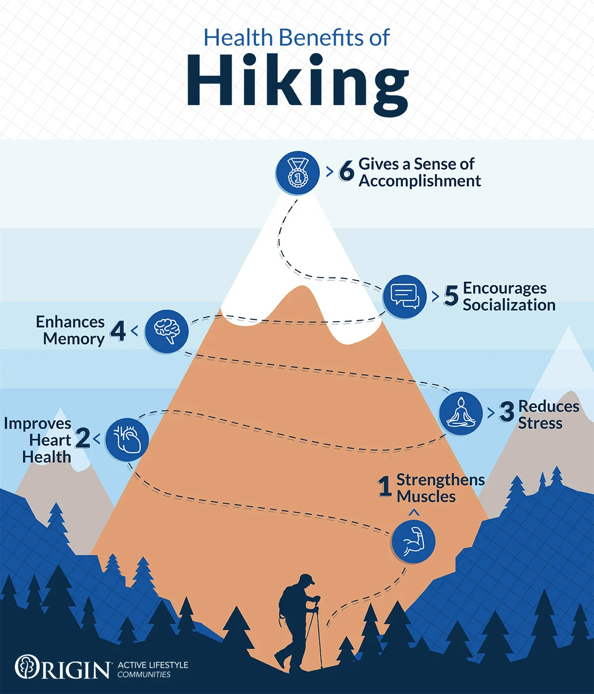
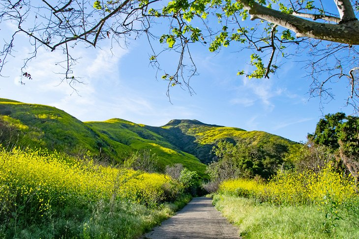

Hiking Definition
Hiking is a long, vigorous walk, usually on trails or footpaths in the countryside. Walking for pleasure developed in Europe during the eighteenth century.Religious pilgrimages have existed much longer but they involve walking long distances for a spiritual purpose associated with specific religions.
"Hiking" is the preferred term in Canada and the United States; the term "walking" is used in these regions for shorter, particularly urban walks. In the United Kingdom and the Republic of Ireland, the word "walking" describes all forms of walking, whether it is a walk in the park or backpacking in the Alps. The word hiking is also often used in the UK, along with rambling, hillwalking, and fell walking.
Hiking Benefit
Mental Health: Being in nature can boost your mood and improve mental health. Spending quality time in the great outdoors reduces stress, calms anxiety, and can lead to a lower risk of depression, according to a study done by researchers at Stanford University. In addition to having mental health benefits, being outdoors opens up your senses to your surroundings and improves your sensory perception. Taking in the sights, smells, and feelings of nature has so many health benefits it can even be prescribed by a doctor..
Relational Health: You don’t have to go it alone next time you lace up your hiking boots. Grab a friend, neighbor, or family member for more fun on the trail. Hiking with a partner, or even in a group, can improve the strength and health of your relationships. Because hiking ranges in difficulty from an extremely challenging climb to a casual way of spending time outside, it’s a great way to strengthen the friendships or bonds you have with your companions. Whether it’s with a younger sibling, neighborhood friend, or even a grandparent, hiking a trail together can bring you closer and help build a healthy relationship.
Hiking Trails in LA
Paseo Miramar: Paseo Miramar is more of a locals-only trail in the early mornings, where Westsiders come for ocean views and well-maintained fire roads, plus a serious booty burn, considering the heavy climb on the way up to the summit. The reward is one of the city’s most spectacular seaside vistas—Parker Mesa Overlook—making this 5.5-mile loop through the Pacific Palisades parkland one of L.A.’s not-to-be-missed hikes.
Runyon Canyon Park: The vibe is oh-so-Hollywood, with shirtless model bros and blondes in yoga pants with tiny dogs. There are two hiking routes, the longer of which is a real workout. Those guys definitely earned their abs. Runyon is beyond simple to navigate. You may need to take a few breathers on the ascent, to catch your breath and to take selfies at the vantage points throughout (both are necessary). This is perfect for the traveler who doesn't want to stray far from the city for beautiful views or for a quick workout.